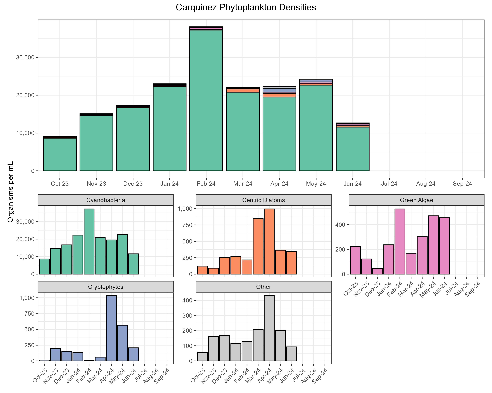
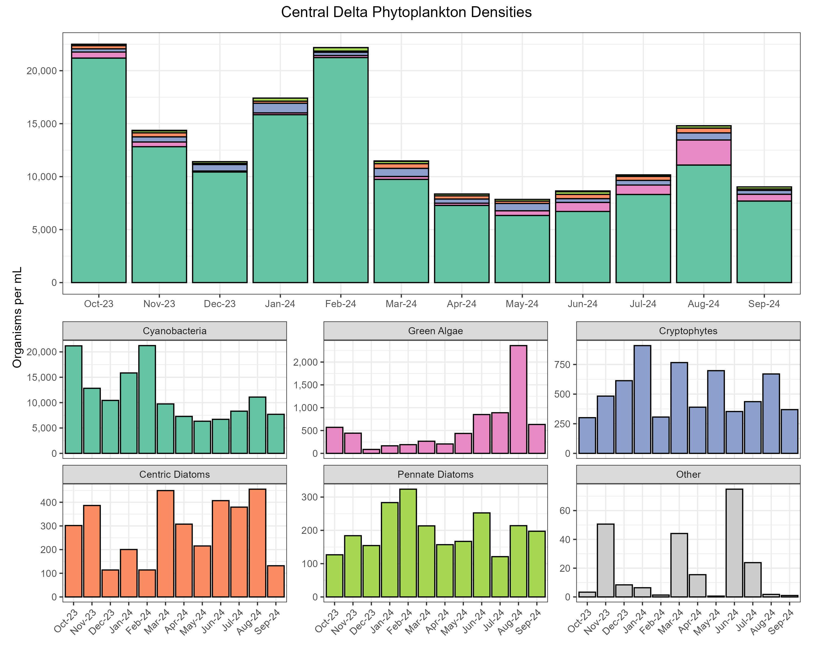
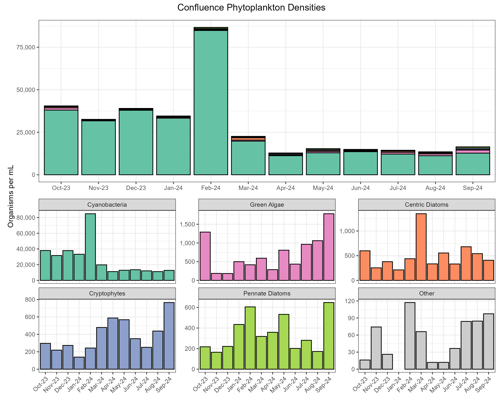
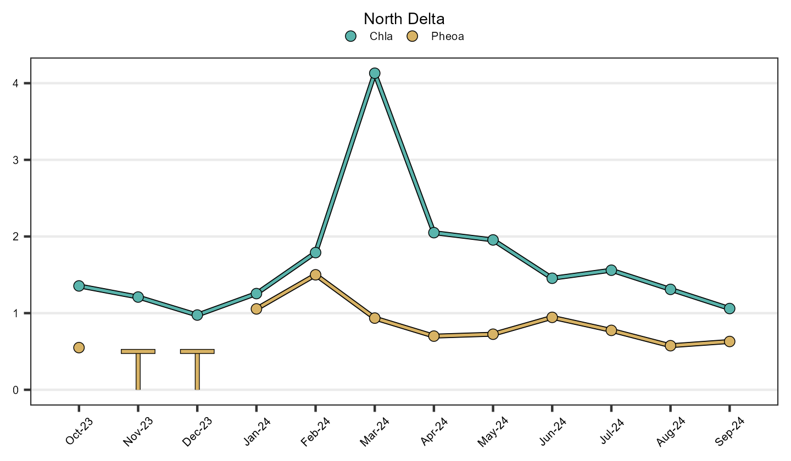
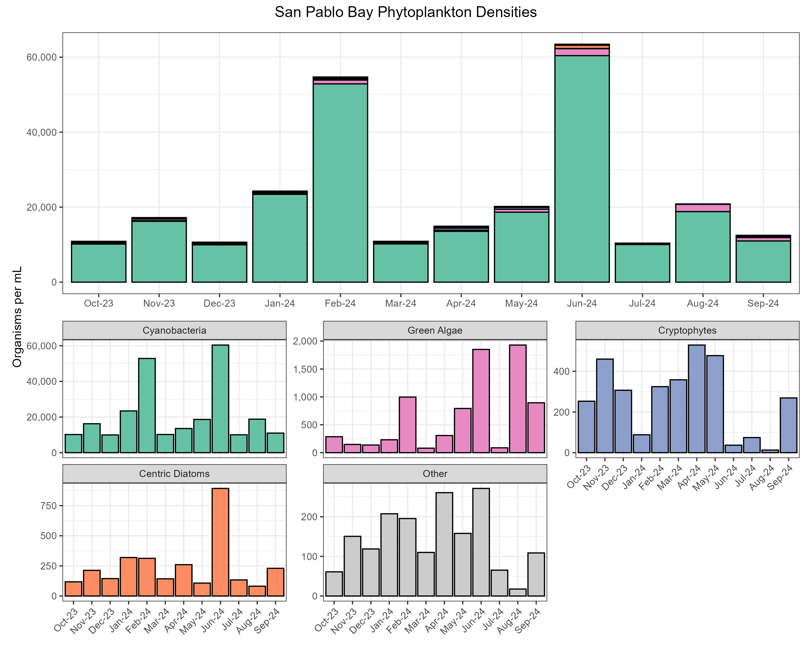
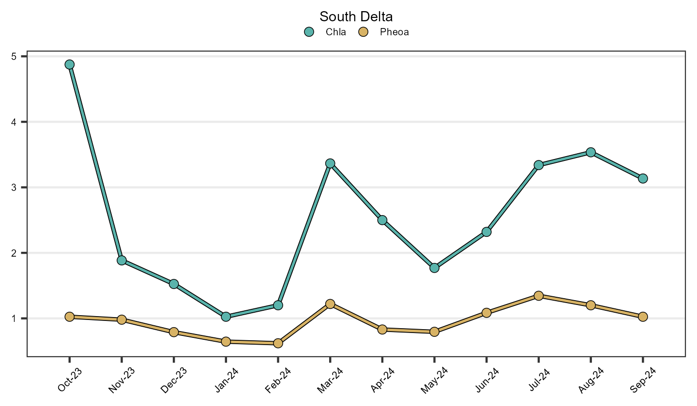
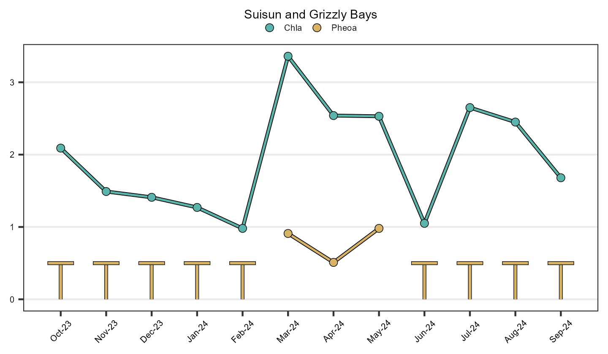
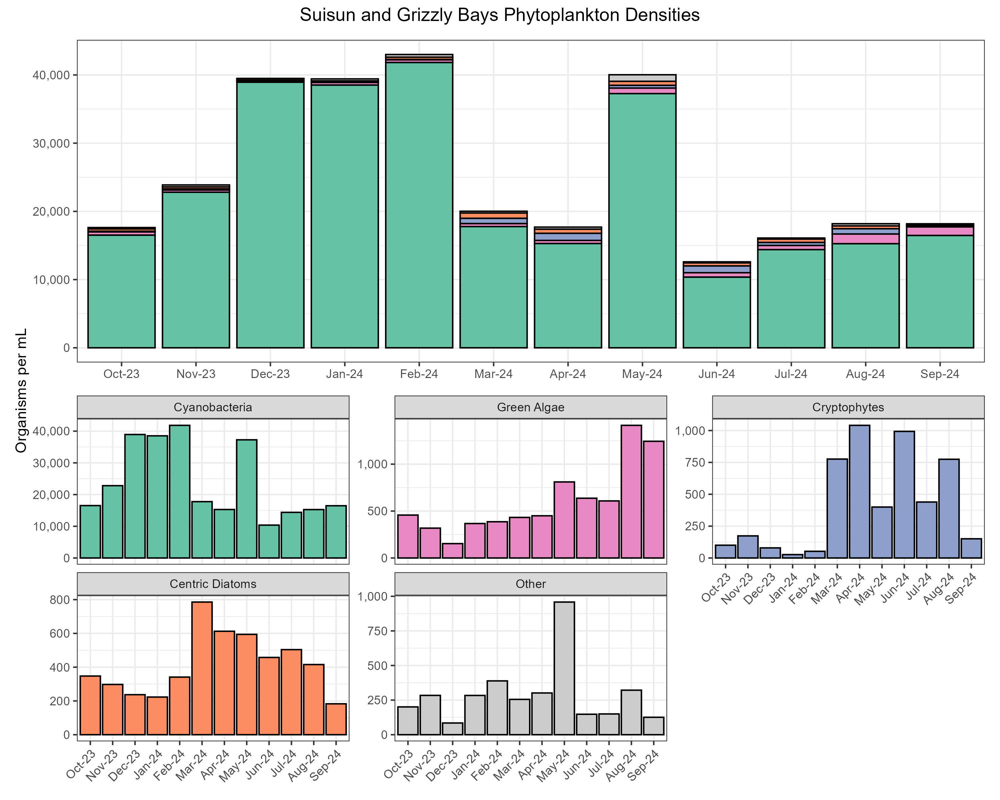
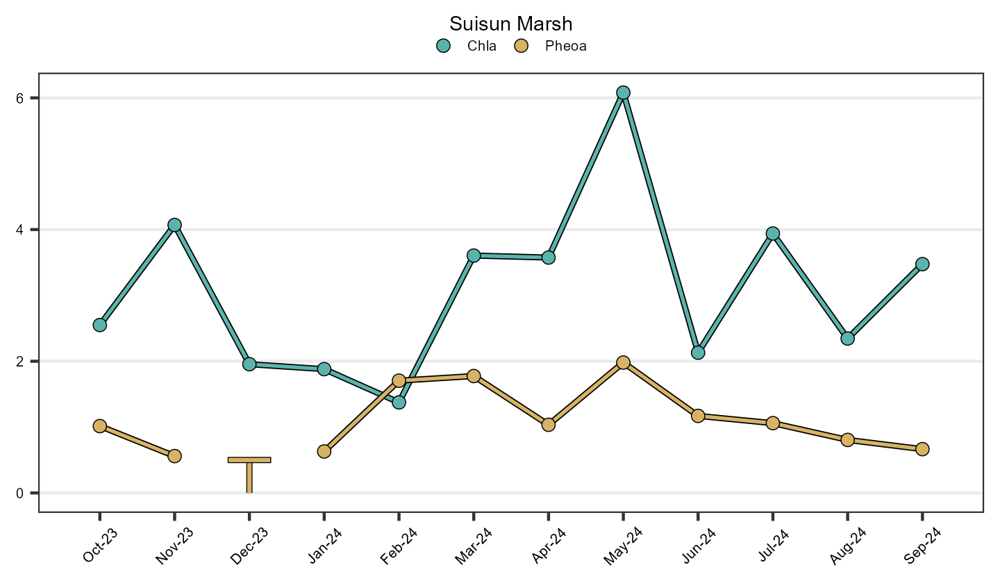
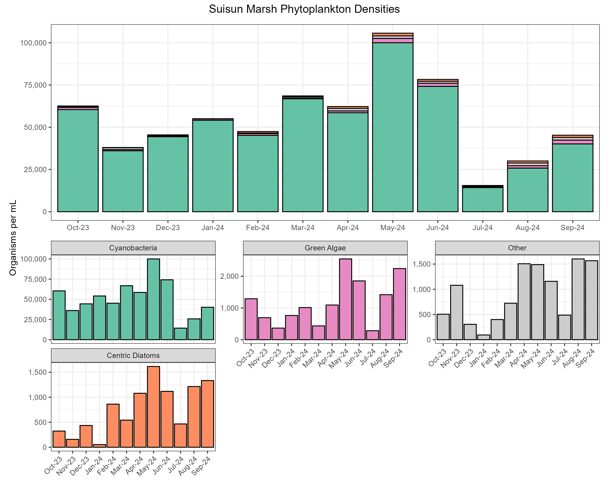

Phytoplankton Report
Introduction
The Department of Water Resources (DWR) and the US Bureau of Reclamation (USBR) are required by Water Right Decision 1641 (D-1641) to collect phytoplankton and chlorophyll a samples to monitor algal community composition and biomass at select sites in the upper San Francisco Estuary (Estuary). This report describes the results of these monitoring efforts for water year 2023 (October 1st 2022 through September 30th 2023) which was classified as a wet year in the Sacramento and San Joaquin Valleys (source).
Methods
Phytoplankton samples were collected monthly at 24 monitoring sites throughout the Upper Estuary and were grouped into regions based on their geographic location (Figure 1; Table 1). These sites represent a variety of aquatic habitats, from narrow, freshwater channels to broad, estuarine bays.
| Region | WY Index | Stations |
|---|---|---|
| Carquinez | Sacramento | NZ002, NZ004 |
| Central Delta | San Joaquin | D16, D19, D26, D28A |
| Confluence | Sacramento | D4, D10, D12, D22 |
| North Delta | Sacramento | C3A, NZ068 |
| San Pablo Bay | Sacramento | D41, D41A, NZ325 |
| South Delta | San Joaquin | C9, C10A, MD10A, P8 |
| Suisun and Grizzly Bays | Sacramento | D6, D7, D8 |
| Suisun Marsh | Sacramento | NZ032, NZS42 |
Phytoplankton
The 10 most common genera were determined by summing the normalized organism counts across all stations and months for each genus. For the bar graphs, average organism counts were calculated per month, per region, and normalized to the number of stations. Average summary statistics are reported as the mean (μ) ± the standard deviation.
For more in-depth methodology, see here.
Chlorophyll a and Pheophytin a
Samples of chlorophyll a and pheophytin a were collected monthly at 24 monitoring sites throughout the upper Estuary using a submersible pump positioned 1 meter below the water’s surface. Average analyte concentrations were then calculated per month, per region, and were normalized to the number of stations. Average summary statistics are reported as the median (M) ± the median absolute deviation.
For more in-depth methodology, see here.
Overall Results
Phytoplankton Identification
All organisms collected in water year 2023 fell into these 12 algal groups:
• Centric Diatoms
• Chrysophytes
• Ciliates
• Cryptophytes
• Cyanobacteria
• Dinoflagellates
• Euglenoids
• Green Algae
• Haptophytes
• Pennate Diatoms
• Raphidophytes
• Synurophytes
The 10 most common genera collected in water year 2023 were, in order:
• Eucapsis (cyanobacteria)
• Chlorella (green algae)
• Cyclotella (centric diatoms)
• Plagioselmis (cryptophytes)
• Nitzschia (pennate diatoms)
• Skeletonema (centric diatoms)
• Monoraphidium (green algae)
• Teleaulax (cryptophytes)
• Cryptomonas (cryptophytes)
• Planktolyngbya (cyanobacteria)
Of the groups identified, centric diatoms, cyanobacteria, and green algae constituted 98.99% of the organisms collected (Figure 2).

Pigment Concentrations
97.92% of samples had chlorophyll a levels below 10 μg/L, which is considered limiting for zooplankton growth (Müller-Solger et al., 2002). The average chlorophyll a value was 2.20 ± 0.99 µg/L; values ranged from < 0.50 µg/L to 23.70 µg/L. 0.69% of samples were below the reporting limit. The average pheophytin a value was 0.88 ± 0.37 µg/L; values ranged from < 0.50 µg/L to 6.39 µg/L. 18.75% of samples were below the reporting limit.
Regional Results
Carquinez
Water Quality
The average chlorophyll a value was 2.54 ± 0.91 µg/L; values ranged from 0.56 µg/L to 4.87 µg/L. The average pheophytin a value was 0.64 ± 0.38 µg/L; values ranged from < 0.50 µg/L to 1.84 µg/L. 37.5% of samples were below the reporting limit. Time series plots averaged over region are shown in Figure 3.
Phytoplankton
The most abundant algal groups were cyanobacteria (96% of organisms, µ = 58746 ± 72498 organisms/mL), green algae (2.2% of organisms, µ = 1434 ± 1814 organisms/mL), and centric diatoms (1.1% of organisms, µ = 459 ± 574 organisms/mL). The remaining 0.7% of organisms were comprised of chrysophytes, ciliates, cryptophytes, dinoflagellates, euglenoids, and pennate diatoms (Other, Figure 4).

Central Delta
Water Quality
The average chlorophyll a value was 1.58 ± 0.68 µg/L; values ranged from < 0.50 µg/L to 7.95 µg/L. 2.08% of samples were below the reporting limit. The average pheophytin a value was 0.70 ± 0.27 µg/L; values ranged from < 0.50 µg/L to 2.62 µg/L. 16.67% of samples were below the reporting limit. Time series plots averaged over region are shown in Figure 5.
Phytoplankton
The most abundant algal groups were cyanobacteria (94.9% of organisms, µ = 21804 ± 48437 organisms/mL), green algae (2.6% of organisms, µ = 666 ± 1203 organisms/mL), and centric diatoms (0.9% of organisms, µ = 282 ± 388 organisms/mL). The remaining 1.6% of organisms were comprised of chrysophytes, cryptophytes, dinoflagellates, euglenoids, haptophytes, and pennate diatoms (Other, Figure 6).

Confluence
Water Quality
The average chlorophyll a value was 2.05 ± 0.90 µg/L; values ranged from 0.61 µg/L to 5.42 µg/L. The average pheophytin a value was 0.80 ± 0.30 µg/L; values ranged from < 0.50 µg/L to 2.20 µg/L. 18.75% of samples were below the reporting limit. Time series plots averaged over region are shown in Figure 7.
Phytoplankton
The most abundant algal groups were cyanobacteria (95.7% of organisms, µ = 51544 ± 84041 organisms/mL), green algae (2.5% of organisms, µ = 1166 ± 1833 organisms/mL), and centric diatoms (0.9% of organisms, µ = 483 ± 763 organisms/mL). The remaining 0.8% of organisms were comprised of chrysophytes, ciliates, cryptophytes, dinoflagellates, euglenoids, pennate diatoms, and raphidophytes (Other, Figure 8).

North Delta
Water Quality
The average chlorophyll a value was 1.98 ± 0.87 µg/L; values ranged from 0.53 µg/L to 5.45 µg/L. The average pheophytin a value was 0.70 ± 0.38 µg/L; values ranged from < 0.50 µg/L to 3.57 µg/L. 37.5% of samples were below the reporting limit. Time series plots averaged over region are shown in Figure 9.

Phytoplankton
The most abundant algal groups were cyanobacteria (92.1% of organisms, µ = 25302 ± 47095 organisms/mL), green algae (4.5% of organisms, µ = 832 ± 1730 organisms/mL), and centric diatoms (1.1% of organisms, µ = 309 ± 383 organisms/mL). The remaining 2.1% of organisms were comprised of chrysophytes, ciliates, cryptophytes, dinoflagellates, euglenoids, and pennate diatoms (Other, Figure 10).
San Pablo Bay
Water Quality
The average chlorophyll a value was 3.38 ± 1.48 µg/L; values ranged from < 0.50 µg/L to 16.50 µg/L. 2.78% of samples were below the reporting limit. The average pheophytin a value was 0.79 ± 0.32 µg/L; values ranged from < 0.50 µg/L to 5.90 µg/L. 25% of samples were below the reporting limit. Time series plots averaged over region are shown in Figure 11.
Phytoplankton
The most abundant algal groups were cyanobacteria (94.5% of organisms, µ = 48328 ± 43726 organisms/mL), green algae (3% of organisms, µ = 1292 ± 1578 organisms/mL), and centric diatoms (1.8% of organisms, µ = 471 ± 666 organisms/mL). The remaining 0.7% of organisms were comprised of chrysophytes, ciliates, cryptophytes, dinoflagellates, euglenoids, pennate diatoms, and synurophytes (Other, Figure 12).

South Delta
Water Quality
The average chlorophyll a value was 2.52 ± 1.18 µg/L; values ranged from 0.57 µg/L to 23.70 µg/L. The average pheophytin a value was 1.39 ± 0.51 µg/L; values ranged from < 0.50 µg/L to 6.39 µg/L. 4.17% of samples were below the reporting limit. Time series plots averaged over region are shown in Figure 13.

Phytoplankton
The most abundant algal groups were cyanobacteria (95.4% of organisms, µ = 34945 ± 172287 organisms/mL), green algae (2.2% of organisms, µ = 694 ± 1354 organisms/mL), and centric diatoms (1.2% of organisms, µ = 523 ± 910 organisms/mL). The remaining 1.1% of organisms were comprised of chrysophytes, ciliates, cryptophytes, dinoflagellates, euglenoids, and pennate diatoms (Other, Figure 14).
Suisun and Grizzly Bays
Water Quality
The average chlorophyll a value was 2.58 ± 0.87 µg/L; values ranged from 0.83 µg/L to 6.79 µg/L. The average pheophytin a value was 0.93 ± 0.38 µg/L; values ranged from < 0.50 µg/L to 2.40 µg/L. 19.44% of samples were below the reporting limit. Time series plots averaged over region are shown in Figure 15.

Phytoplankton
The most abundant algal groups were cyanobacteria (95.8% of organisms, µ = 56948 ± 83181 organisms/mL), green algae (2.4% of organisms, µ = 1381 ± 2127 organisms/mL), and centric diatoms (1.1% of organisms, µ = 543 ± 959 organisms/mL). The remaining 0.8% of organisms were comprised of chrysophytes, ciliates, cryptophytes, dinoflagellates, euglenoids, haptophytes, and pennate diatoms (Other, Figure 16).

Suisun Marsh
Water Quality
The average chlorophyll a value was 2.21 ± 1.12 µg/L; values ranged from 0.99 µg/L to 9.46 µg/L. . The average pheophytin a value was 1.44 ± 0.56 µg/L; values ranged from < 0.50 µg/L to 3.56 µg/L. 4.17% of samples were below the reporting limit. Time series plots averaged over region are shown in Figure 17.

Phytoplankton
The most abundant algal groups were cyanobacteria (96.4% of organisms, µ = 82361 ± 78772 organisms/mL), green algae (2% of organisms, µ = 1693 ± 2008 organisms/mL), and centric diatoms (1.1% of organisms, µ = 790 ± 1435 organisms/mL). The remaining 0.4% of organisms were comprised of chrysophytes, cryptophytes, dinoflagellates, euglenoids, pennate diatoms, and raphidophytes (Other, Figure 18).

Interpretations
Overall, chlorophyll-a, pheophytin-a, and phytoplankton abundance followed a seasonal pattern with the highest values of pigments and abundances in the spring and summer months and lower values and abundances in winter months. One exception was a large cyanobacterial bloom in January 2023 which occurred across all regions. However, this bloom was not associated with larger chlorophyll-a values, suggesting that, while the cyanobacteria were abundant, they were not producing large amounts of biomass as chlorophyll-a. Though cyanobacteria were dominant in the abundance counts, all phytoplankton fell into 12 distinct taxonomic groups distributed across all the regions of the San Francisco Estuary. Chlorophyll-a values were low throughout the year across all regions, with the majority of values below 10 µg/L, which is considered food limiting for zooplankton.
References
[APHA] American Public Health Association, American Waterworks, and Water Environmental Federation. 2012. Standard Methods for the Examination of Water and Wastewater. 22nd ed. Washington, D.C.: American Public Health Association.
Alpine, A. E., and Cloern, J. E. 1992. Trophic interactions and direct physical effects control phytoplankton biomass and production in an estuary. Limnol. Oceanogr. 37: 946-955
Carmichael, W., ed. 1981. The Water Environment, Algal Toxins and Health. Plenum Press, New York, N. Y.
Gannon, J. E. and R. S. Stemberger. 1978. Zooplankton (especially crustaceans and rotifers) as indicators of water quality. Trans. Amer. Microsc. 97:16.
Horne, A. and Goldman, C. 1994. Limnology. 2nd ed. New York, New York, McGraw-Hill, Inc.
Müller-Solger AB, Jassby AD, Müller-Navarra DC. 2002. Nutritional quality of food resources for zooplankton (Daphnia) in a tidal freshwater system (Sacramento-San Joaquin River Delta). Limnology and Oceanography 47(5): 1468-1476.
Utermöhl, H. 1958. Zur Vervollkommnung der quantitativen Phytoplankton Methodik. Mitt. Int. Verh. Limnol. 9: 38.
van den Hoek, C., D.G. Mann, and H.M. Jahns. 1995. Algae: an introduction to Phycology. Cambridge University Press, United Kingdom.
Archived Reports
Previous EMP phytoplankton reports can be found here.